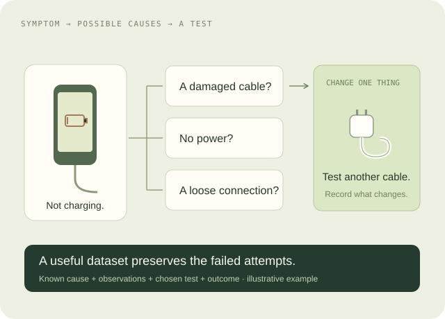
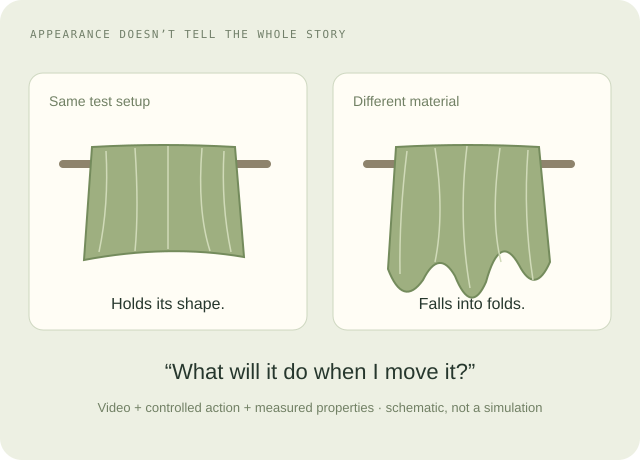
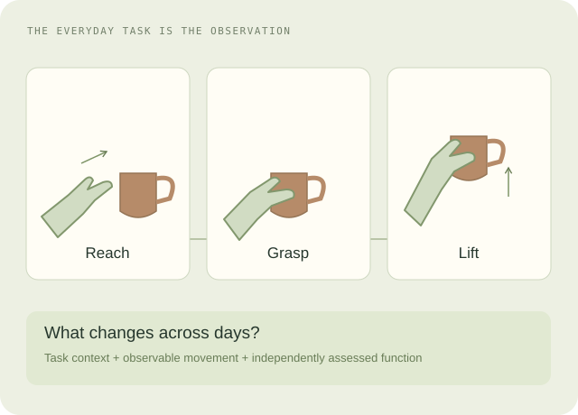

The moments we forget are often the ones an assistant needs to understand. We’re exploring how AI could remember everyday experience—and know the limits of what it saw.
See a moment. Remember the event. Return to the evidence.
THE QUESTION BEHIND THE LAB
What would it take for AI to remember what actually happened?
Our starting point is personal memory: finding misplaced things, recalling completed actions, and answering questions about a day. First-person video provides a view. The research is about turning that view into reliable, useful memories.
RESEARCH SKETCHBOOK / MEMORY + THREE NEW DIRECTIONS
What could we learn from reality?
Ideas to react to, not a fixed research agenda. Each sketch connects a useful question to data that could help answer it.
01 / EVERYDAY MEMORY · FEATURED
“Where did I leave it?”
An AI memory that connects what happened to evidence, tracks changes, and stays honest about what it missed.
Potential dataset First-person events, real recall questions, checked answers, and observation gaps.
A device won’t charge. A zipper sticks. An assembly wobbles. Could AI choose a test that distinguishes possible causes, then update when the result contradicts its first guess?
Potential dataset Known faults, first-person observations, tests, failed attempts, and verified fixes. Start with simple, controlled objects.
What this could improve Visual troubleshooting and causal reasoning. The research target is diagnosis from observations and interventions.
Procedural errors are already studied in CaptainCook4D. A possible contribution is verified cause → test → outcome data.

03 / A MATERIAL WORLD · NEW SKETCH
“How will this behave?”
Two fabrics can look alike and fall differently. Could a model infer useful physical properties from watching a material bend, stretch, or move?
Potential dataset Videos of controlled interactions paired with measurements. Begin with fabric drape; keep the setup and material properties known.
What this could improve Virtual clothing, realistic AR/VR materials, and models that predict physical behavior.
There is a foundation in MIT’s fabric-property research. The opportunity would need to come from useful new coverage and better measured examples.

04 / RECOVERY IN DAILY LIFE · NEW SKETCH
“What’s getting easier again?”
Reaching for a cup, opening a container, or getting dressed could provide observations of everyday function over time. Could AI summarize those changes in a way that is useful to a rehabilitation researcher?
Potential dataset Consented everyday activity recordings linked to task context and independently assessed function. This direction needs a clinical research partner.
What this could improve Research on progress outside structured assessments. The goal would be validated functional measures; a video alone would not establish recovery.
Egocentric hand-use research already explores this connection. A new study would need a specific clinical question and reliable labels.

A RESEARCH LAB, STARTING WITH MEMORY
Useful questions. Useful data.
We want to create experiments, datasets, and benchmarks that connect AI to human experience. Memory is our starting direction; the other sketches are possibilities to discuss. Data licensing and specialized models could follow from useful research.